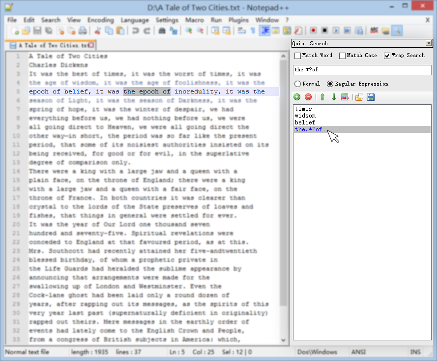

Download
How to install
Copy the NppQuickSearchPanel.dll to the plugins folder in your Notepad++ directory.
Important Note: NppQuickSearchPanel only support the Unicode version of Notepad++.
Description
NppQuickSearchPanel is a notepad++ plugin which stores your favourite keywords in a list, providing fast and convenient searching. You can perform search on any keywords by a click.

Features
- Manage your frequently used keywords in a list.
- Click on keywords to search.
- Provide multiple search options and regular expression support.
How to use
Open up Notepad++, click the  Show QuickSearchPanel button in the toolbar, or use menu Plugins / NppQuickSearchPanel / Show QuickSearchPanel.
Show QuickSearchPanel button in the toolbar, or use menu Plugins / NppQuickSearchPanel / Show QuickSearchPanel.
- Input keyword in the text box. Click
 Add button or just press Enter to add the keyword to the list.
Add button or just press Enter to add the keyword to the list. - Click on the keyword in the list to search forward. Shift + Click to search backward.
- Ctrl + Click on the keyword to launch Notepad++ Find dialog with selected keyword pasted in "Find what" automatically.
- Use
 Remove button to remove the selected keyword. You can also change the order of selected keyword by using
Remove button to remove the selected keyword. You can also change the order of selected keyword by using  Move up and Move down.
Move up and Move down. - Use Import/
 Export to load/save current keywords list.
Export to load/save current keywords list.
How to build
Build with Visual Studio 2013 or later. If you encounter a "The system cannot find the file specified" error when building the project, add the location of NETFX 4.5.1 Tools to your Path environment variable.
For 64-bit system, the typical location of NETFX 4.5.1 Tools is
C:\Program Files (x86)\Microsoft SDKs\Windows\v8.1A\bin\NETFX 4.5.1 Tools
For 32-bit system, the typical location is
C:\Program Files\Microsoft SDKs\Windows\v8.1A\bin\NETFX 4.5.1 Tools
Contributors
Credits
- NppPlugin.NET.v0.6, the C# Notepad++ plugin template is brought to you by ufo-pu55y.
- The nice toolbar icons come from famfamfam.com, under Creative Commons Attribution 3.0 License.
About Notepad++
Notepad++ is a free (as in "free speech" and also as in "free beer") source code editor and Notepad replacement that supports several languages. Running in the MS Windows environment, its use is governed by GPL License. For more information, please refer to the official site.